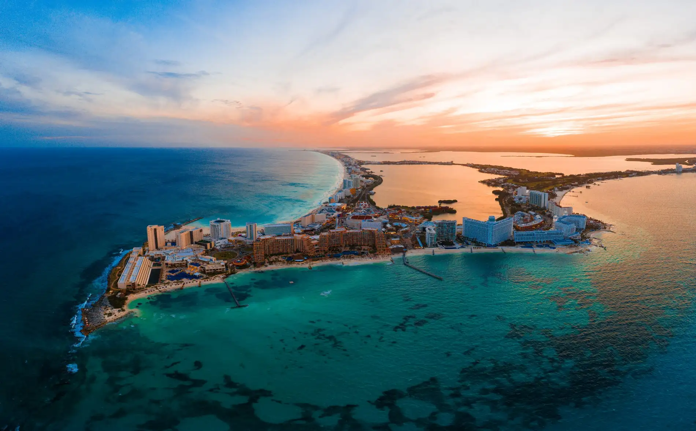

Descripción
Cancún es una ciudad turística de México conocida principalmente por sus playas y sus aguas del Caribe.
Es un destino muy visitado para descansar, disfrutar del mar y conocer diferentes lugares naturales.

Sitios para visitar
- Playa Delfines
- Isla Mujeres
- Zona Hotelera
- Museo Maya de Cancún
Precios aproximados
- Vuelo: $600
- Hotel: $90 por noche
- Comida: $35 por día
- Tour: $70
Estadía recomendada: 5 a 7 días